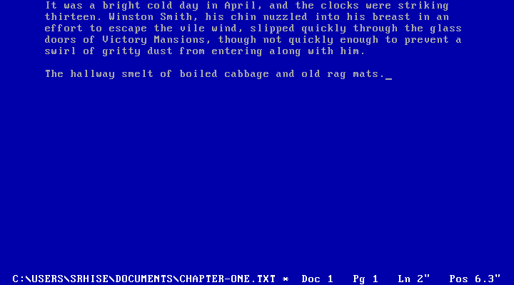

╔═══════════════════════════════════════╗ ║ ║ ║ P H O S P H O R ║ ║ ║ ║ WordPerfect is a place, and ║ ║ this is a way back to it ║ ║ ║ ╚═══════════════════════════════════════╝
A distraction-free writer that emulates VGA text mode.

Get it
▸ Download for macOSor brew install --cask srhise/tap/phosphor
macOS 11+, Apple Silicon and Intel. Free, MIT-licensed, source on GitHub.
The nostalgia is architectural, not cosmetic
The app maintains a real 80×25 grid of character cells, blits them from the IBM VGA ROM font into a 720×400 framebuffer, and passes that through a CRT shader. It is a DOS screen because it is built like one.
That constraint is the feature. One document, one screen, no chrome, no formatting to fiddle with. Text wraps at 65 columns: a 6.5″ line at 10 characters per inch, which is an 8.5″ page with 1″ margins, which is what the position readout in the status line is measuring.
Your files stay yours
Plain UTF-8 .txt, anywhere on disk. No proprietary
format, no library folder, nothing to export from. Saves are atomic,
and every 30 seconds a modified document is copied to a timed backup
that never touches your own file. If a backup outlives its document,
the next launch offers to recover it.
The keys teach themselves
Esc drops the menu bar; every item shows its shortcut
on the right, so the menu teaches the keys and then you stop needing
it. Cmd-S, Cmd-Z, and the rest work the way
your hands expect. F3 toggles the CRT, F6
counts words, F7 exits, the way it always did.
The name is the coating on the inside of a cathode-ray tube. The electron beam excites it and it keeps glowing after the beam has moved on, which is why those screens smeared instead of merely displaying.